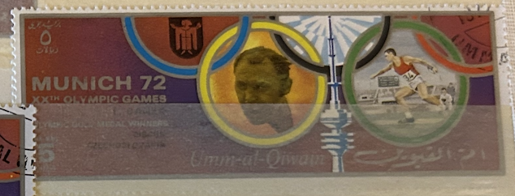
| SOURCE | TITLE| IMAGE MATCH | click to source page |
| eBay | UMM AL QIWAIN 1972 5r used NG Olympic Games Munich Discus AIRMAIL STAMP ##a3 | eBay |  |
| eBay | Ajman Indiana Olympics Postal Stamps for sale | eBay |  |
| Wikimedia.org | File:1972 stamp of Ajman Nadezhda Chizhova.jpg - Wikimedia Commons |  |
| Wikimedia.org | File:1972 stamp of Ajman K Janz.jpg - Wikimedia Commons |  |
| eBay | Olympic High Jump | eBay |  |
| Alamy | Ludvik danek hi-res stock photography and images - Alamy |  |
| Wikimedia.org | File:1972 stamp of Ajman Wolfgang Nordwig.jpg - Wikimedia Commons | 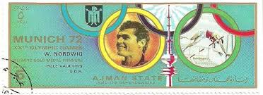 |
| Wikipedia | File:1972 stamp of Ajman Graziano Mancinelli.jpg - Wikipedia |  |
| Alamy | The 1972 stamp from Ajman features a portrait of renowned artist A. Bondarchuk. This stamp was part of a series released to commemorate the contributions of Bondarchuk to the arts and culture |  |
| eBay UK | Russia 1972 Olympics/Sports/Games m/s -RED o/p (n12392) | eBay UK | 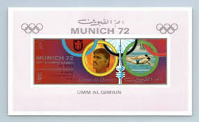 |
| Wikipedia | Equestrian at the 1972 Summer Olympics – Individual jumping - Wikipedia |  |
| Alamy | 1972 equestrian richard meade hi-res stock photography and images - Alamy |  |
| Wikimedia.org | File:1972 stamp of Ajman A Bondarchuk.jpg - Wikimedia Commons | 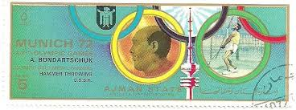 |
| Alamy | 1972 olympics hi-res stock photography and images - Alamy |  |
| Dreamstime.com | Gymnastics, Summer Olympic Games 1960 - Rome, Serie, Circa 1960 Editorial Stock Image - Image of philatelic, post: 223496879 |  |
| alamy.it | Questo francobollo 1972 di Ajman presenta Daniel Morelon, un rinomato ciclista francese e campione olimpico. Il francobollo onora i suoi successi nel ciclismo su pista, in particolare le sue vittorie nella medaglia | 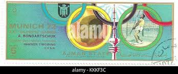 |
| Alamy | American swimmer Mark Spitz and seven-time Olympic champion returns to Munich (Bavaria, Germany) to promote swimming trunks on 23 August 1977. | usage worldwide Stock Photo - Alamy |  |
| Alamy | History item hi-res stock photography and images - Alamy | 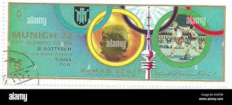 |
| Shutterstock | 16+ Thousand Vintage Olympic Royalty-Free Images, Stock Photos & Pictures | Shutterstock | 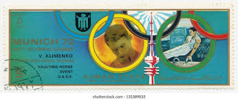 |
| PICRYL | 11 Viktor klimenko Images: PICRYL - Public Domain Media Search Engine Public Domain Search |  |
| Shutterstock | 2 John Akii Bua Royalty-Free Images, Stock Photos & Pictures | Shutterstock | 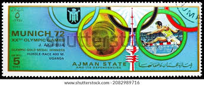 |
| Alamy | Pole vault wolfgang nordwig hi-res stock photography and images - Alamy |  |
| Alamy | John akii bua hi-res stock photography and images - Alamy |  |
| PICRYL | 25 Soviet athlete Images: PICRYL - Public Domain Media Search Engine Public Domain Search | 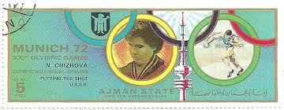 |
| Dreamstime.com | Stecher Stock Photos - Free & Royalty-Free Stock Photos from Dreamstime | 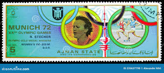 |
| Alamy | Nadezhda chizhova hi-res stock photography and images - Alamy | 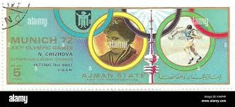 |
| Shutterstock | Olympics Retro: Over 10,946 Royalty-Free Licensable Stock Photos | Shutterstock | 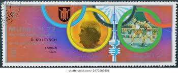 |
| Alamy | Ajman postage stamp hi-res stock photography and images - Page 9 - Alamy | 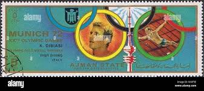 |
| Alamy | Viktor klimenko hi-res stock photography and images - Alamy | 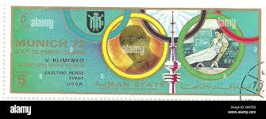 |
| alamy.de | Wolfgang nordwig -Fotos und -Bildmaterial in hoher Auflösung – Alamy | 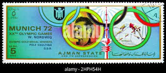 |
| Alamy | Sports postage stamps hi-res stock photography and images - Alamy | 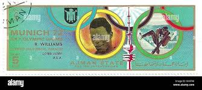 |
| Shutterstock | 3+ Thousand Munich Stamps Royalty-Free Images, Stock Photos & Pictures | Shutterstock | 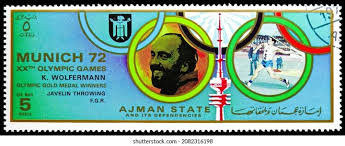 |
| eBay | Ajman 1972 Summer Olympic, Munich 1972, MNH, imperf. DELUXE | eBay |  |
| USA 🇺🇸 1960 CELEBRATE THE CENTURY mint stamps offer 30 baht, postage excluded |  | |
| timbre.sk | Fujeira |  |
| eBay | FUJEIRA Munich Olympics Winners (Diving, USA) MNH souvenir sheet | eBay | 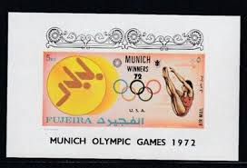 |
| eBay | Stamps Ajman Progressive Proofs | eBay |  |
| eBay | FUJEIRA Munich Olympics Winners (Discus, Czechoslovakia) MNH souvenir sheet | eBay | 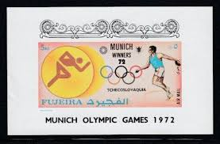 |
| eBay | Fujeira / Olympic Games Munich 1972 , Winners . MNH | eBay | 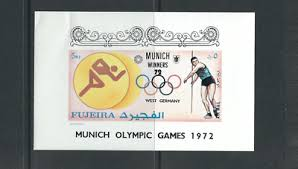 |
| eBay | FUJEIRA 1972 MUNICH 72' WINNERSMINT VF NH O.G S/S CTO (F5) | eBay |  |
| mbeatpercussion.com | Topical Four Volume Of 1972 Munich Olympics Stamp Catalogs ~1000 Stamps Pahlavi Shah Era Iran | 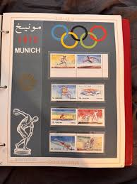 |
| schuf.de | Topical Four Volume Of 1972 Munich Olympics Stamp Catalogs ~1000 Stamps Pahlavi Shah Era Iran |  |
| eBay | Olympische Spiele München Mi. Bl.8 Stempel Eröffnungsfeier 1972 | eBay |  |
| Indian Hobby Club | SHARJAH ~ MUNICH OLYMPIC GAMES 1972 ~ M.S. ~ RARE ~ E-35 – Indian Hobby Club | 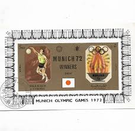 |
| eBay | FUJEIRA Munich Olympics Winners (Swimming, USA) MNH souvenir sheet | eBay | 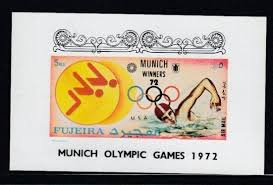 |
| eBay | Fujeira 1972 Olympische Sommerspiele, München 1972, gestempelt,, Block, DELUXE | eBay | 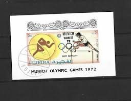 |
| eBay | FUJEIRA Olympic Games 1972 Munich complete set of 25 Imperforated blocks MNH | eBay | 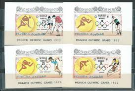 |
| Todocolección | upper yafa 1967 paintings goya imperf. sheet mi - Buy Stamps from other Asian countries on todocoleccion | 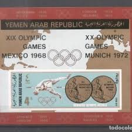 |
| eBay | Germany 1972 Olympic First Day Cover Unit Scott# B475a, B489, B490 Set of Three | eBay | 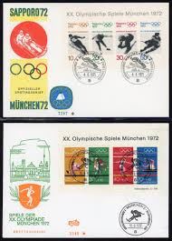 |
| aicolympic.org | 059 - PANORAMA OF THE OLYMPIC HISTORY - AICO | 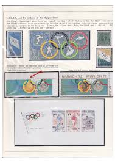 |
| eBay | Ajman 1972 ** Bl.E335 Silver Foil, Olympische Spiele München Springreiten Boxen | eBay | 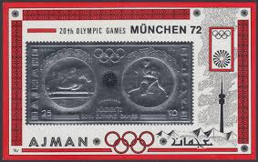 |
| HipStamp | Ajman Olympic Stamp:1972 Summer Olympic Munich'72-Cto-Stamp SET Very Fine | Middle East - Saudi Arabia, Stamp / HipStamp | 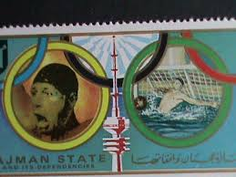 |
| eBay | O) 1960 GERMAN DEMOCRATIC REPUBLIC-GERMANY, WINTER AND SUMMER OLYMPIC GAMES-BOXI | eBay | 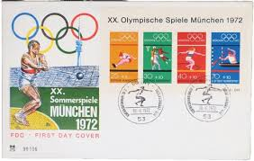 |
| eBay | FUJEIRAH 1972 OLYMPICS, XF MNH/** Sheet+Set Collection, Winter Games Sports UAE | eBay | 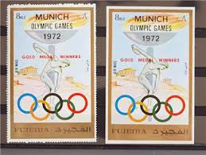 |
| eBay | FUJEIRA Munich Olympics Winners (Javelin, West Germany) MNH souvenir sheet | eBay | 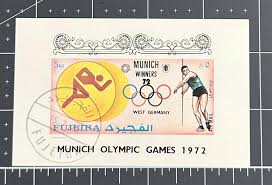 |
| eBay | Germany Olympic Games 1972 Münich used block with cancel Weightlifting | eBay | 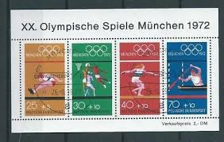 |
| eBay | FUJEIRA Munich Olympics Winners MNH imperforate set | eBay | 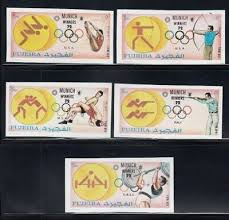 |
| eBay | FUJEIRAH 1972 OLYMPICS, Cpl. XF ImPerf MNH** Set , Sports Winners, Emirates, UAE | eBay | 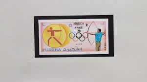 |
| Wikimedia.org | File:DBP 1956 231 Olympisches Jahr.jpg - Wikimedia Commons | 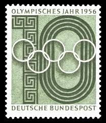 |
{kind=link}
{kind=link}
{kind=link}